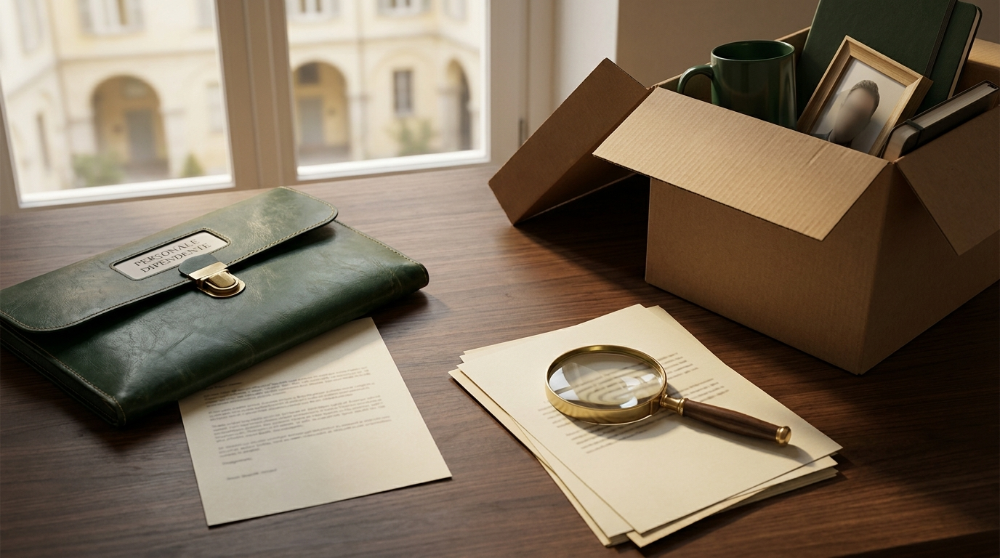

Licenziamento ritorsivo: la prova passa anche per gli indizi
Con l'ordinanza 13711 dell'11 maggio 2026 la Cassazione torna sul licenziamento ritorsivo e chiarisce un punto decisivo: il lavoratore può dimostrare l'intento di rappresaglia anche attraverso indizi, senza una prova diretta. Una precisazione che incide sull'onere probatorio e rafforza la tutela contro i recessi mascherati da motivi formali.

Il fatto
La Corte di Cassazione, Sezione Lavoro, con l'ordinanza n. 13711 dell'11 maggio 2026, ha affrontato il tema della prova del cosiddetto licenziamento ritorsivo: quel recesso adottato dal datore di lavoro non per le ragioni formalmente dichiarate, ma come reazione a un comportamento legittimo del dipendente (una rivendicazione retributiva, una denuncia, l'esercizio di un diritto).
Il principio affermato è netto: l'intento ritorsivo può essere dimostrato anche tramite indizi, purché gravi, precisi e concordanti. Non serve, quindi, una prova diretta e documentale del motivo illecito.
Inquadramento normativo
Il licenziamento ritorsivo rientra nella categoria del licenziamento per motivo illecito determinante, sanzionato con la nullità ai sensi dell'art. 1345 del Codice civile, richiamato in materia di lavoro insieme all'art. 1418 c.c. La nullità comporta la conseguenza più favorevole per il lavoratore: la reintegrazione nel posto di lavoro e il risarcimento del danno (art. 18 dello Statuto dei lavoratori per i rapporti che vi rientrano; art. 2 del D.Lgs. 23/2015 per le assunzioni successive al 7 marzo 2015).
Il punto sempre delicato è l'onere della prova. Per consolidata giurisprudenza, chi invoca la nullità del licenziamento deve dimostrare che il motivo di ritorsione è stato l'unico e determinante. La novità dell'ordinanza riguarda il *come* di questa dimostrazione: la Cassazione consente di ricorrere alla prova presuntiva (art. 2729 c.c.), cioè a un ragionamento logico che, partendo da fatti noti, conduce a ritenere provato il fatto ignoto (l'intento ritorsivo).
Implicazioni pratiche
Per il lavoratore l'orientamento alleggerisce, nella sostanza, la posizione probatoria. Difficilmente esiste un documento che attesti la volontà di rappresaglia. Poter valorizzare elementi indiziari — la stretta vicinanza temporale tra una rivendicazione e il recesso, la debolezza o pretestuosità della motivazione addotta, un trattamento differenziato rispetto ad altri colleghi — rende concretamente esercitabile la tutela.
Per l'azienda il messaggio è speculare: la formalità della motivazione non basta. Se il motivo dichiarato (riorganizzativo, disciplinare) appare fragile e si colloca in un contesto temporale o relazionale sospetto, il giudice può ricostruire l'intento illecito anche senza una prova diretta. Aumenta quindi l'esigenza di documentare in modo solido e tracciabile le ragioni effettive di ogni recesso.
Resta fermo un limite: gli indizi devono essere gravi, precisi e concordanti. Non è sufficiente un sospetto generico o la sola insoddisfazione del lavoratore. Serve un quadro coerente di elementi convergenti.
Cosa fare in concreto
- Lavoratori: raccogliete e conservate ogni elemento che colleghi il licenziamento a un vostro comportamento legittimo (email, messaggi, date di rivendicazioni o segnalazioni, testimoni). La cronologia degli eventi è spesso l'indizio più efficace.
- Lavoratori: verificate la tenuta della motivazione formale del recesso. Una giustificazione vaga o smentita dai fatti è un indizio di rilievo.
- Aziende: documentate per iscritto le ragioni reali di ogni licenziamento, con istruttoria tracciabile, soprattutto se interviene a ridosso di contenziosi interni o reclami.
- Aziende: evitate disparità di trattamento ingiustificate tra dipendenti in situazioni analoghe; le differenze non spiegate alimentano il quadro indiziario.
- Entrambi: consigliamo di valutare la posizione con un professionista prima di agire o impugnare, dato che i termini di impugnazione del licenziamento sono brevi e perentori (60 giorni per l'atto stragiudiziale, 180 per il deposito del ricorso).
In sintesi
L'ordinanza non crea un nuovo diritto, ma chiarisce un metodo di prova. Conferma che la tutela contro il licenziamento ritorsivo è effettiva e che la sostanza dei fatti prevale sulla forma delle motivazioni. È un orientamento che premia chi costruisce e conserva con cura la propria documentazione.
---
*Contributo informativo a cura di Tamburro & Partners - Avv. Giuseppe Tamburro. Non costituisce parere legale.*
Ogni storia di lavoro ha i suoi tempi.
Se gestisci HR e vuoi un confronto su contenzioso, ispezioni o licenziamenti, scrivi allo studio. Ti rispondiamo entro un giorno lavorativo.